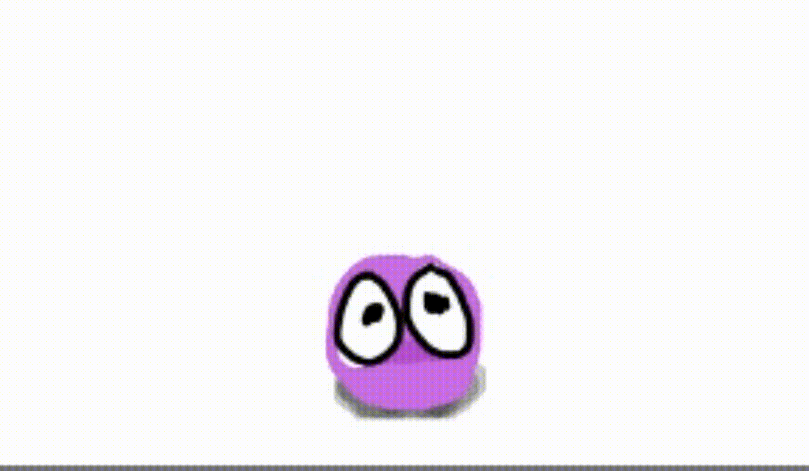
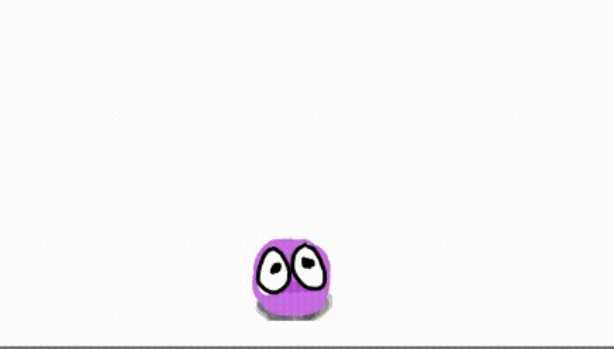
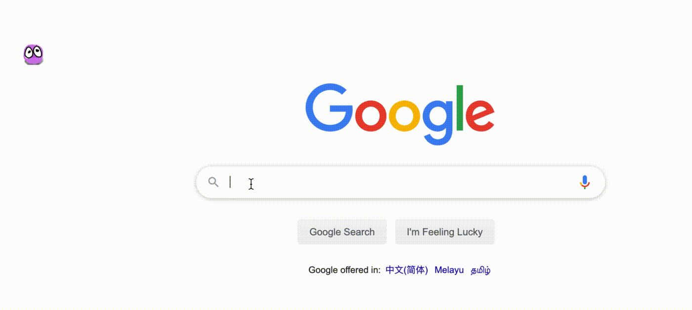
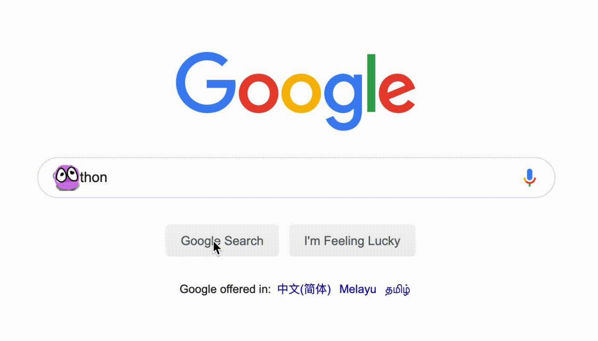
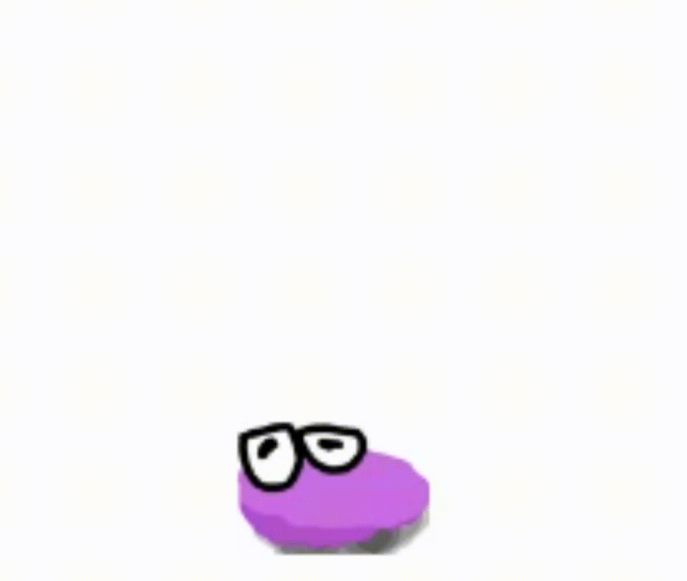

I just came back from the Super Silly Hackathon 2019. It was my second time to participate in this Super Silly Hackathon.
Hello everybody we are ready for this year, are you?? pic.twitter.com/lem52qHO6Q
— Super Silly Hackathon — 14 Dec 2019 (@supersillyhack) December 14, 2019
This year, my silly hackathon idea is to build a little pet in the browser!

Inspiration?
I saw the tamagotchi on touchbar a while ago, I don't have a touchbar, but I have a browser. So why not create a pet in the browser through Chrome Extension?
What can it do?
1. It runs away from mouse cursor

2. It eats whatever you try to type into an input

3. It annihilates the buttons you hover onto

Implementation
Chrome Extension
Firstly, it is a Chrome Extension. I used Content Scripts, so that I have access to the DOM of the pages I am visiting.
Here is my manifest.json for my extension:
{
"manifest_version": 2,
"name": "Super Silly Hackathon",
"description": "Super Silly Hackathon",
"version": "1.0.0",
"content_scripts": [
{
"matches": ["<all_urls>"],
"js": ["content.js"],
"css": ["content-ext.css"],
"run_at": "document_start",
"all_frames": true
}
]
}To start, I added an onload event, to add my pet into the browser:
// filename: content.js
function onload() {
const pet = document.createElement('div');
updatePosition(100, 100);
pet.classList.add('ssh-pet');
document.body.appendChild(pet);
}
window.addEventListener('load', onload);/* filename: content.css */
.ssh-pet {
height: 30px;
width: 30px;
position: fixed;
z-index: 1000;
background-image: url('/images/rest.png');
background-size: 30px 30px;
background-position: 0 0;
}The first problem I encountered, is that I couldn't access the /images/rest.png. After some googling, I need to:
1. Add web_accessible_resources into the manifest.json
{
// ...
"web_accessible_resources": ["images/*"]
}2. Prepend chrome-extension://__MSG_@@extension_id__/ for the URL
.ssh-pet {
/* ... */
background-image: url('chrome-extension://__MSG_@@extension_id__/images/rest.png');
}Make it look alive
A static image will look fake.
As the quote says, "eyes is the window to the soul", to make the pet look real, we need to make the eye blink.
(That's how you judge a person is dead or alive in movies right? Dead body will just stare blankly to nowhere)
To make the pet blink, I found some useful tutorials on how to create CSS sprite sheet animations.
@keyframes ssh-pet-rest {
0% {
background-position-x: 0;
}
100% {
background-position-x: -90px;
}
}
.ssh-pet.rest {
background-image: url('chrome-extension://__MSG_@@extension_id__/images/rest-sprite.png');
background-repeat: repeat-x;
background-size: 90px 30px;
background-position: 0 0;
animation: ssh-pet-rest 0.2s steps(3);
}To animate it, I added the rest class to the pet, and removed it when it's done animating.
pet.classList.add('rest');
// when the animation finished, remove the class
const onanimationend = () => {
pet.removeEventListener('animationend', onanimationend);
pet.classList.remove('rest');
};
pet.addEventListener('animationend', onanimationend);At the beginning, I thought I would add more other micro expressions to the pet, so I wrote a scheduler, to schedule expressions randomly:
async function doSomething(random) {
switch (random) {
case 0:
// ...
default:
return animateRest();
}
}
function scheduleSomething() {
setTimeout(async () => {
const choices = 10;
// cheat to do Math.floor
const random = ~~(Math.random() * choices);
await doSomething(random);
scheduleSomething();
}, 800 + Math.random() * 1000);
}
// make animation promise based
function animateRest() {
return animateClass('rest');
}
function animateClass(cls) {
return new Promise(resolve => {
pet.classList.add(cls);
const onanimationend = () => {
pet.removeEventListener('animationend', onanimationend);
pet.classList.remove(cls);
};
pet.addEventListener('animationend', onanimationend);
});
}I used await to wait for animation to finish, before schedule the next action again, so that it will not have 2 actions running in parallel.
Avoid the cursor
I drew a sprite sheet that make the pet looks like it is squiggling away,

while at the same time set the transform: translateX() to actually move it:
@keyframes ssh-pet-shift-left {
0% {
background-position-x: 0;
/* highlight-next-line */
transform: translateX(0);
}
100% {
background-position-x: -240px;
/* highlight-next-line */
transform: translateX(-30px);
}
}
.ssh-pet.shift-left {
background-image: url('/images/shift-left-sprite.png');
background-repeat: repeat-x;
background-size: 240px 30px;
background-position: 0 0;
animation: ssh-pet-shift-left 0.8s steps(8);
}In JavaScript, I tried to keep the position state inside an object:
const position = { x: 0, y; 0 };
function offsetPosition(x, y) {
updatePosition(position.x + x, position.y + y);
}
function updatePosition(x, y) {
pet.style.left = (position.x = x) + 'px';
pet.style.top = (position.y = y) + 'px';
}So, to shift away from the cursor would be:
async function animateShiftLeft() {
await animateClass(`shift-left`);
offsetPosition(-30, 0);
}So, when the animation ends, the transform: translateX() will go from -30px back to 0, and at the same time, I moved the position of the pet -30px in x-axis.
To know when the cursor is on top of the pet, I used mousemove event:
pet.addEventListener('mousemove', async event => {
if (!animating) {
animating = true;
await shiftAway();
animating = false;
}
});
// edge avoidance shifting
async function shiftAway() {
if (position.x < 40) {
await animateShiftRight(true);
} else if (position.x > window.innerWidth - 40) {
await animateShiftLeft(true);
} else if (Math.random() > 0.5) {
await animateShiftLeft(true);
} else {
await animateShiftRight(true);
}
}To avoid reanimate while still animate, I added a animating flag, as an mutex.
Besides, it would be weird to see the pet shifting pass through the browser window, because that way, you would never be able to interact with it anymore 😢
Eating the characters
To know when someone is typing into any of the input box, I attach an input event listener on to the document.body:
document.body.addEventListener('input', async event => {
debounceByElement(event.target, eatInputValue, 1000);
});There maybe multiple <input /> on the page, so I created a debounce function for each <input />.
To make the eating simple, I will always eat from the left, consuming characters from left to right:
function eatInputValue(elem) {
elem.value = elem.value.slice(1);
debounceByElement(event.target, eatInputValue, 1000);
}However naively eating the characters this way, will screw up your cursor position / selection. So I googled and pasted the code snippet to improve it:
function eatInputValue(elem) {
// highlight-start
// remember selection position
const start = elem.selectionStart,
end = elem.selectionEnd;
// highlight-end
elem.value = elem.value.slice(1);
// highlight-start
// restore selection position
elem.setSelectionRange(Math.max(start - 1, 0), Math.max(end - 1, 0));
// highlight-end
debounceByElement(event.target, eatInputValue, 1000);
}After able to "eat" the characters, I need to animate the pet eating the characters
To align the eating with the removing of a character, I split the animation into 2 parts, the eating and the chewing (I named it digesting during the hackathon).
function eatInputValue(elem) {
// highlight-next-line
await animateClass('eat');
const start = elem.selectionStart,
end = elem.selectionEnd;
elem.value = elem.value.slice(1);
elem.setSelectionRange(Math.max(start - 1, 0), Math.max(end - 1, 0));
// highlight-next-line
await animateClass('digest');
debounceByElement(event.target, eatInputValue, 1000);
}To make it more realistic, I tried to make the pet tilt forward, while consuming the character:
@keyframes ssh-pet-eat-move {
0%,
30% {
transform: translateX(0);
}
50% {
transform: translateX(4px);
}
100% {
transform: translateX(0);
}
}The pixel values had been tuned to make the movement subtle, yet natural.
Now, how do I place my pet to the left of the input?
Instead of squiggle to the right position, I made the pet teleport!
async function animateTeleport(x, y) {
await animateClass('disappear');
pet.style.opacity = 0;
updatePosition(x, y);
pet.style.opacity = 100;
await animateClass('reappear');
}To calculate the teleport destination, I used getBoundingClientRect():
function leftSideOf(elem) {
const { x, y, height } = elem.getBoundingClientRect();
const to_x = x - pet.size.width + paddingLeft(elem);
const to_y = y + height / 2 - pet.size.height / 2;
return [to_x, to_y];
}
function paddingLeft(elem) {
return (
Number(
window
.getComputedStyle(elem)
.getPropertyValue('padding-left')
.replace(/px|r?em/, '')
) || 0
);
}The padding of the input is important. It brings the pet closer to the character it is going to eat. 🤤
Annihilate the buttons
Pet don't like buttons because buttons take away your concentration from your pet.
To get a list of buttons, I use document.querySelectorAll():
const buttons = document.querySelectorAll('button, input[type="submit"], [role="button"]');
buttons.forEach(button =>
button.addEventListener('mousemove', mouseMove)
);To annihilate the buttons, I animated the pet with a pair of dead red eyes, and shake it for 400 milli-seconds, before annihilating the elements into vapor:
async function removeTheElement(elem) {
if (animating) {
return;
}
animating = true;
pet.classList.add('hate');
await timeout(400);
elem.removeEventListener('mousemove', mouseMove);
await animateClass('item-disappearing', elem);
elem.style.visibility = 'hidden';
pet.classList.remove('hate');
animating = false;
}I used visibility: hidden, so that I dont disrupt the DOM structure, yet making it disappear and unclickable, unlike opacity: none.
The pet with hatred is slightly bigger and agitated than the normal pet:
@keyframes hating {
0% {
transform: scale(1.1) translateX(-2px)
}
50% {
transform: scale(1.1) translateX(2px)
}
100% {
transform: scale(1.1) translateX(-2px)
}
}To turn the button annihilated into vapor, I used filter: blur():
@keyframes item-disappearing {
0% {
filter: blur(0px);
}
80% {
opacity: 1;
}
100% {
filter: blur(8px);
transform: scale(1.5);
opacity: 0;
}
}Difficulties
Synchronising interactions
A lot edge cases has been found and fixed by using the animating, or eating flag:
- where to avoid cursor, while eating the characters
- to annihilate or to eat? There's an heuristic to choose which one to do, when both get scheduled at the same time.
Developing locally
Everytime when the content script is updated, I need to click refresh in the chrome://extensions page:
In order to developed faster, I created a simple HTML, and test it locally.
<html>
<link rel="stylesheet" type="text/css" href="content.css" />
<body>
<script src="content.js"></script>
</body>
</html>PostCSS script
Remember I mentioned that, for resource to be accessible from the Chrome Extension, I would have to prepend the url with chrome-extension://__MSG_@@extension_id__/?
But that does not work if I developed in standalone HTML, because I can't access the assets from chrome-extension:// protocol in my localhost.
I would have to write /images/rest.png, and replaced it to chrome-extension://__MSG_@@extension_id__/images/rest.png when I test it on my extension.
So, I wrote a simple script with PostCSS to automatically do it:
const fs = require('fs');
const path = require('path');
const postcss = require('postcss');
const input = path.join(__dirname, '../content.css');
const output = path.join(__dirname, '../content-ext.css');
// watch when file change
fs.watchFile(input, () => {
const css = fs.readFileSync(input, 'utf-8');
// NOTE: `from: undefined` to stop PostCSS complain about sourcemap
postcss([replaceUrl]).process(css, { from: undefined }).then((result) => {
fs.writeFileSync(output, result.css, 'utf-8');
});
});
function replaceUrl(root) {
root.walkDecls('background-image', decl => {
decl.value = decl.value.replace(/url('(.*)')/, "url('chrome-extension://__MSG_@@extension_id__$1')");
});
}I used content.css for my local development, and automatically built content-ext.css for the extension with all the URL replaced.
Demo
I did a super quick demo, which went quite well, I think. 🤔
For those who are curious, and want to try out, you can visit here for the demo.
For those who are curious about the source code, can visit the Github repo.
Summary
It has been a fruitful event.
And @lihautan wins a bag of tropical fruits pic.twitter.com/CtQUBGOI7h
— Yishu See (@yishusee) December 14, 2019
Appreciate the organisers time and effort to make the Hackathon goes as smoothly as possible.
I managed to do something that I never really done before:
- CSS sprite sheet animation
- Chrome Extension that interacts with the user and manipulates the DOM
Hopefully I will partcipate the Super Silly Hackathon again next year.